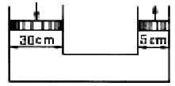
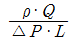
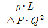
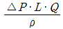
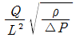

소방설비기사(기계분야) (2005-03-06 기출문제)
1과목: 소방원론
1. 인화점이 영하 20℃에서 영상 40℃의 사이에 있는 여러 종류의 액체위험물을 보관하는 창고의 화재위험성과 관련한 판단 중 옳은 것은?
- 여름철에 창고안이 더워질 수록 위험성이 커진다고 판단함이 합리적이다.
- 겨울철에 창고안이 추워질 수록 위험성이 커진다고 판단함이 합리적이다.
- 위험성은 계절의 온도와는 상관없다고 판단하여도 무방하다.
- 같은 인화점의 액체들이라도 비중의 크기에 따라 위험관리의 집중도를 결정할 필요가 있다.
(정답률: 50%)

2. 다음 중 2차 안전구획에 속하는 것은?
- 복도
- 계단부속실(계단전실)
- 계단
- 피난층에서 외부와 직면한 현관
(정답률: 63%)
3. 연기의 이동과 관계가 없는 것은?
- 굴뚝효과
- 비중 차
- 공조설비
- 적설량
(정답률: 78%)
4. 방화문에 관한 설명 중 옳지 않은 것은?
- 방화문은 직접 손으로 열 수 있어야 한다.
- 철재로서 철판의 두께가 1.6㎜인 것은 갑종방화문이라 할 수 있다.
- 철재 및 망이 들어있는 유리로 된 것은 을종방화문이다.
- 피난계단에 설치하는 방화문에 한해 자동폐쇄장치가 요구된다.
(정답률: 55%)
5. 중앙코너방식으로 피난자의 집중으로 패닉현상이 일어날 우려가 있는 형태는 어떤 형인가?
- T형
- X형
- Z형
- H형
(정답률: 79%)
6. 중질유 저장탱크 화재시 나타나는 보일오버현상을 설명한 것으로 가장 적당한 것은?
- 연소유면의 온도가 100℃를 넘을 때 연소유면에 주수되는 물이 비등하면서 연소유를 비산시켜 탱크밖까지 확대시키는 현상
- 탱크내에 저장된 유류가 열축적으로 인한 비등현상을 일으켜 탱크밖까지 연소를 확대시키는 현상
- 연소유면으로부터 100℃이상의 열파가 탱크 저부로 전달되어 탱크저부에 고여 있는 물을 비등하게 하면서 연소유를 탱크밖으로 비산시키며 연소하는 현상
- 탱크밖으로 유출된 고온의 중질유가 수분과 접촉되어 수분을 비등하게 하고 이 수분의 폭발적인 팽창력에 의해 연소유 자신이 비등하는 것 처럼 보이는 현상
(정답률: 72%)
7. 제4류 위험물은 어느 물질에 속하는가?
- 환원성 물질
- 폭발성 물질
- 산화성물질
- 인화성 물질
(정답률: 72%)
8. 화재의 종류에서 급수는 C급이며 화재의 종류는 전기화재이다. 표시색은?
- 백색
- 황색
- 무색
- 청색
(정답률: 78%)
9. 이산화탄소 소화약제의 소화효과와 관계가 없는 것은?
- 질식효과
- 냉각효과
- 가압소화
- 화염에 대한 피복작용
(정답률: 59%)
10. 다음 중 기계열에 해당하는 것은?
- 유도열
- 정전기열
- 마찰스파크열
- 유전열
(정답률: 82%)
11. 내화성능으로 구분되어지는 것은?
- 회반죽 바르기
- 콘크리트
- 연와조
- 석면판
(정답률: 47%)
12. 하론에 의한 피해의 척도와 관계 없는 것은?
- 지구의 온난화 지수
- 오존층의 파괴지수
- 분해열에 의한 복사열 지수
- 치사농도
(정답률: 68%)
13. 지하층이라 함은 건축물의 바닥이 지표면 아래에 있는 층으로서 그 바닥으로부터 지표면까지의 평균높이가 당해층 높이의 얼마인 것을 말하는가?
- 1/2 이상
- 1/2 이하
- 1/3 이상
- 1/3 이하
(정답률: 52%)
14. 가연물의 연소형태를 잘못 짝지은 것은?
- 표면연소 : 석탄
- 분해연소 : 목재
- 증발연소 : 유황
- 내부연소 : 셀룰로이드
(정답률: 44%)
15. 가연성 액체의 농도를 저하시키는 방법을 이용하여 소화를 하였을 경우, 이는 어느 소화원리를 이용한 것인가?
- 가연물 제거
- 산소 제거
- 열원 제거
- 연쇄반응 차단
(정답률: 41%)
16. 내화구조 건물의 표준화재 온도곡선에서 화재발생후 30분 경과시의 내부온도는 약 몇 ℃인가?
- 500
- 840
- 950
- 1010
(정답률: 50%)
17. 후레쉬 오버에 영향을 미치는 것이 아닌 것은?
- 내장재료의 종류
- 화원(火源)의 크기
- 실의 개구율(開口率)
- 열원(熱源)의 종류
(정답률: 50%)
18. 액화가스 저장탱크의 누설로 부유 또는 확산된 액화가스가 착화원과 접촉하여 액화 가스가 공기중으로 확산, 폭발하는 현상은?
- 프로스오버
- 블레비
- 스롭오버
- 보일오버
(정답률: 70%)
19. 분진폭발의 위험이 없는 것은?
- 알루미늄분
- 황
- 생석회
- 적인
(정답률: 84%)
20. 플래시 오버(FLASH OVER)의 지연대책으로 바른 것은?
- 두께가 얇은 내장재료를 사용한다.
- 열전도율이 큰 내장재료를 사용한다.
- 주요 구조부를 내화구조로 하고 개구부를 크게 설치한다.
- 실내 가연물은 대량 단위로 집합 저장한다.
(정답률: 32%)
2과목: 소방유체역학
21. 어떤 액체가 0.01 m3의 체적을 갖는 강체 실린더 속에서 50 kPa의 압력을 받고 있다. 이 때 압력이 100 kPa으로 증가되었을 때 액체의 체적이 0.0099 m3으로 축소되었다면 이 액체의 체적탄성계수 K는 몇 kPa인가 ?
- 500
- 5000
- 50000
- 500000
(정답률: 50%)
22. 그림에서 두 피스톤의 지름이 각각 30cm 와 5cm 이다. 큰 피스톤에 무게 500N을 놓아서 1cm만큼 움직이면, 작은 피스톤에는 얼마의 힘이 발생되며 몇 cm 나 움직이겠는가?

- 1 N, 1 cm
- 5 N, 5 cm
- 10 N, 30 cm
- 13.9 N, 36 cm
(정답률: 41%)
23. 다음 △P, L, ρ, Q를 결합했을 때 무차원항은? (단, △P:압력차, ρ:밀도, L:길이, Q:유량)




(정답률: 40%)
24. 유체에 대한 설명 중 가장 옳은 것은?
- PV = RT의 관계식을 만족시키는 물질
- 아무리 작은 전단력에도 변형을 일으키는 물질
- 용기의 모양에 따라 충만하는 물질
- 높은 곳에서 낮은 곳으로 흐를 수 있는 물질
(정답률: 50%)
25. 온도계를 이용하여 온도를 측정하는 것과 가장 관련있는 것은?
- 열역학 제0법칙
- 열역학 제1법칙
- 열역학 제2법칙
- 열역학 제3법칙
(정답률: 49%)
26. 인산암모늄을 기제로 한 분말소화약제의 소화작용과 직접 관련되지 않는 것은?
- 메타인산(HPO3)에 의한 피막작용
- 열분해에 의한 냉각작용
- 발생된 불연성가스에 의한 질식작용
- 수산기에 작용하여 연소 필요한 연쇄반응 차단효과
(정답률: 37%)
27. 관마찰계수가 0.022인 지름 50 mm 관에 물이 흐르고 있다 이 관에 부차적 손실계수가 각각 10, 1.8인 밸브와 티이(Tee)가 결합되어 있을 경우 관의 상당길이는 몇 m 인가?
- 24.3
- 24.9
- 25.4
- 26.8
(정답률: 44%)
28. 펌프 입구의 연성계 및 출구의 압력계 지침이 흔들리고 송출유량도 주기적으로 변화하는 이상현상은?
- 공동현상(Cavitation)
- 수격작용(Water Hammering)
- 맥동현상(Surging)
- 언밸런스(Unbalance)
(정답률: 60%)
29. 다음 중 뉴턴의 점성법칙을 기초로한 점도계는?
- 맥미첼(MacMichael) 점도계
- 오스트왈드(Ostwald) 점도계
- 낙구식 점도계
- 세이볼트(saybolt) 점도계
(정답률: 55%)
30. 유동하는 기체의 속도를 측정할 수 있는 것은?
- 쉴리렌 측정기
- 간섭계
- 열선 유속계
- 섀도우그래프
(정답률: 50%)
31. 포소화약제가 갖추어야 할 조건이 아닌 것은?
- 부착성이 있을 것
- 유동성을 가지고 내열성이 있을 것
- 응집성과 안정성이 있을 것
- 파포성을 가지고 기화가 용이할 것
(정답률: 63%)
32. 정용적형 베인펌프에 있어서 회전속도가 1500 rpm 이고 송출압력 6.86 MPa, 송출량 53 L/min일 때 소비된 축동력 은 7.4 kW이다. 이 펌프의 전효율은 몇 % 인가?
- 94.6
- 79.8
- 80.3
- 81.9
(정답률: 45%)
33. 10 kW의 전열기를 3시간 사용하였다. 전 방열량은 몇 kJ 인가?
- 12810
- 16170
- 25800
- 108000
(정답률: 54%)
34. 베르누이 방정식을 적용할 수 있는 조건으로 구성된 것은?
- 비압축성 흐름, 점성 흐름, 정상 유동
- 압축성 흐름, 비점성 흐름, 정상 유동
- 비압축성 흐름, 비점성 흐름, 비정상 유동
- 비압축성 흐름, 비점성 흐름, 정상 유동
(정답률: 50%)
35. 소방 펌프차가 화재 현장에 출동하여 그 곳에 설치되어 있는 수조에서 물을 흡입하였다. 이 때 진공계가 45cmHg 을 표시하였다면 손실을 무시할 때 수면에서 펌프까지의 높이는 몇 약 m 인가?
- 6.12
- 0.61
- 5.42
- 0.54
(정답률: 49%)
36. 동일한 조건으로 관내를 흐르는 완전 난류 유동에서의 손실수두는?
- 속도에 비례한다.
- 속도에 반비례한다.
- 속도의 제곱에 반비례한다.
- 속도의 제곱에 비례한다.
(정답률: 55%)
37. 유류화재시 수성막포 소화약제와 혼합사용시 소화효과를 높일 수 있는 소화약제는?
- 분말 소화약제
- 화학포 소화약제
- 이산화탄소 소화약제
- 할로겐화합물 소화약제
(정답률: 57%)
38. 수직으로 세워진 노즐에서 30℃의 물이 15 m/s의 속도로 15℃의 공기중에 뿜어 올려진다면 물은 얼마나 올라가겠는 가? (단, 외부와의 마찰에 의한 에너지 손실은 없다.)
- 약 5.8 m
- 약 0.8 m
- 약 23.0 m
- 약 11.5 m
(정답률: 43%)
39. 소방법에서 규정한 포소화약제 중 저발포라 함은 어느 것을 말하는가?
- 팽창비가 20 이하의 포
- 팽창비가 120 이하의 포
- 팽창비가 250 이하의 포
- 팽창비가 500 이하의 포
(정답률: 48%)
40. 지름 5 cm인 구가 대류에 의해 열을 외부공기로 방출한다 이 구는 50 W의 전기히터에 의해 내부에서 가열되고 있다면 구 표면과 공기사이의 온도차가 30℃ 라면 공기와 구 사이의 대류 열전달 계수는 얼마인가?
- 111 W/(m2 .℃)
- 212 W/(m2 .℃)
- 313 W/(m2 .℃)
- 414 W/(m2 .℃)
(정답률: 53%)
3과목: 소방관계법규
41. 다음은 화재조사전담부서 설치ㆍ운영 중 화재조사자의 자격에 관한 설명이다. 바르지 못한 것은 ?
- 행정자치부장관이 실시하는 화재조사에 관한 시험에 합격한자
- 위험물, 소방분야 자격증을 취득한자
- 중앙소방학교에서 7주이상의 화재조사에 관한 전문교육을 이수한자
- 소방공무원으로 화재조사분야에서 1년이상 근무한자
(정답률: 58%)
42. 소방용수시설·소화기구 및 설비 등의 설치명령을 위반한자에 대한 과태료 처분 기준으로 틀린 것은?
- 1차 위반시 ; 30만원
- 2차 위반시 ; 100만원
- 3차 위반시 ; 150만원
- 4차 위반시 ; 200만원
(정답률: 60%)
43. 위험물 간이저장탱크에 대한 설명으로 맞는 것은?
- 통기관은 지름 40mm 이상으로 한다.
- 용량은 600리터 이하 이어야 한다.
- 탱크의 주위에 너비 1.5m 이상의 공지를 두어야 한다.
- 수압시험은 50kpa의 압력으로 10분간 실시하여 새거나 변형되지 아니하여야 한다.
(정답률: 31%)
44. 상주공사감리를 하여야 할 대상으로서 옳은 것은?
- 16층 이상으로서, 300세대 이상인 아파트에 대한 소방 시설의 공사
- 16층 이상으로서, 500세대 이상인 아파트에 대한 소방 시설의 공사
- 지하층을 포함한 16층 이상으로서, 300세대 이상인 아파트에 대한 소방시설의 공사
- 지하층을 포함한 16층 이상으로서, 500세대 이상인 아파트에 대한 소방시설의 공사
(정답률: 56%)
45. 소방용수시설·소화기구 및 설비 등의 설치명령을 위반한자에 대한 과태료는?
- 100만원 이하
- 200만원 이하
- 300만원 이하
- 500만원 이하
(정답률: 38%)
46. 방염처리를 하여야 하는 대상으로서 옳지 않은 것은?
- 종합병원
- 숙박시설이 있는 청소년 시설
- 아파트를 포함한 건축물로서 11층 이상인 것
- 다중이용업의 영업장
(정답률: 72%)
47. 다음 중 소방시설관리업자에게 연1회 이상 종합정밀점검을 받아야 하는 대상으로 맞는 것은?
- 연면적 5,000m2 이상 특정소방대상물
- 연면적 10,000m2 이상 특정소방대상물
- 연면적 5,000m2 이상이고 층수가 15층 이상인 아파트
- 스프링클러설비가 설치된 연면적 5,000m2 이상 특정소방대상물
(정답률: 49%)
48. 다음 중 특정소방대상물에서 사용하는 물품 중 방염성능이 없어도 되는 것은?
- 전시용 섬유판
- 암막, 무대막
- 무대용 합판
- 비닐제품
(정답률: 59%)
49. 다음 중 개구부의 요건으로 옳은 것은 ?
- 개구부의 크기가 지름 60cm 이상의 원이 내접할 수 있을 것
- 해당 층의 바닥면으로부터 개구부 밑부분까지의 높이가 1.2m 이내일 것
- 개구부는 도로 또는 차량이 진입할 수 있는 빈터를 향하지 않을 것
- 내부 또는 외부에서 쉽게 파괴 또는 개방할 수 없을 것
(정답률: 49%)
50. 다음 중 2급 방화관리자의 선임대상자로 부적합한 자는 ?
- 소방공무원으로 6개월 이상 근무한 경력이 있는 자
- 학교에서 소방안전관리학을 전공하고 졸업한 자
- 의용소방대원으로 3년 이상 근무한 경력이 있는 자
- 의무소방대원으로 1년이상 근무한 경력이 있는 자
(정답률: 45%)
51. 행정자치부장관의 형식승인을 받아야 할 소방용 기계·기구에 속하지 않는 것은?
- 가스누설경보기
- 화학반응식 거품소화기
- 소방호스
- 완강기
(정답률: 32%)
52. 방염처리업을 하고자 하는 자는 누구에게 등록을 해야 하는가?
- 행자부장관
- 시ㆍ도지사
- 대통령
- 소방본부장ㆍ소방서장
(정답률: 54%)
53. 위험물 제조소 등에 설치하는 경보설비의 종류가 아닌 것은 어느 것인가?
- 자동화재탐지설비
- 비상경보설비
- 옥내탱크설비
- 확성장치
(정답률: 57%)
54. 위험물 저장소를 승계한 사람은 몇일 이내에 승계사항을 신고하여야 하는가?
- 7
- 14
- 30
- 60
(정답률: 45%)
55. 위험물로서 제1석유류에 속하는 것은?
- 이황화탄소
- 휘발유
- 디에틸에테르
- 파라크실렌
(정답률: 49%)
56. 다음 중 인명구조기구를 설치하여야 할 특정소방대상물은?
- 16층 이상인 아파트 및 7층 이상인 백화점
- 7층 이상인 관광호텔 및 5층 이상인 병원
- 5층 이상인 무도학원 및 7층 이상인 영화관
- 5층 이상인 오피스텔 및 관광휴게시설
(정답률: 63%)
57. 화재를 진압하고 화재·재난·재해 그 밖의 위급한 상황에서의 구조·구급활동을 위하여 소방공무원, 의무소방원, 의용소방대원으로 구성된 조직체를 무엇이라 하는가?
- 구조구급대
- 의무소방대
- 소방대
- 의용소방대
(정답률: 49%)
58. 화재 조사를 하는 관계 공무원을 관계인이 정당한 업무를 방해하거나 화제조사를 수행하면서 알게 된 비밀을 다른 사람에게 누설한 자의 벌금 규정은?
- 100만원 이하의 벌금
- 200만원 이하의 벌금
- 300만원 이하의 벌금
- 400만원 이하의 벌금
(정답률: 47%)
59. 소방시설공사업자가 소방시설공사를 하고자할 때에는 누구에게 착공신고를 하여야 하는가?
- 시·도지사
- 경찰서장
- 소방본부장 또는 소방서장
- 한국소방안전협회장
(정답률: 58%)
60. 다음 중 저수조의 설치기준으로 틀린것은?
- 지면으로부터의 낙차가 4.5미터 이하일 것
- 흡수부분의 수심이 0.5미터 이상일 것
- 흡수관의 투입입구가 사각형인 경우에는 한변의 길이가 60센티미터 이하일 것
- 저수조에 물을 공급하는 방법은 상수도에 연결하여 자동으로 급수되는 구조일 것
(정답률: 45%)
4과목: 소방기계시설의 구조 및 원리
61. 간이스프링클러설비에 설치하는 간이헤드 하나의 최대 방호면적은 몇 m2인가?
- 13.4
- 14.3
- 14.5
- 15.4
(정답률: 55%)
62. 소방대상물내의 보일러실에 제1종 분말소화약제를 사용하여 전역방출방식인 분말소화설비를 설치 할 때 필요한 약 제량(kgf)으로서 맞는 것은? (단, 방호체적 120m3, 개구면적 20m2이다)
- 97.2
- 64.8
- 120.0
- 162.0
(정답률: 36%)
63. 연결살수 설비의 배관시공에 관한 설명 중 옳지 않는 것은?
- 개방형 헤드를 사용하는 연결살수에 있어서의 수평주행 배관은 헤드를 향하여 상향으로 100분의 1이상의 기울기로 설치한다.
- 가지배관 또는 교차배관을 설치하는 경우에는 가지배관의 배열은 토너먼트 방식이어야 한다.
- 가지배관은 교차배관 또는 주배관에서 분기되는 지점을 기점으로 한쪽 가지배관에 설치되는 헤드의 갯수는 8개 이하로 하여야한다.
- 연결살수 설비의 배관은 전용으로 한다.
(정답률: 66%)
64. 층별 바닥면적이 2000m2인 5층 백화점 건물에 폐쇄형 스프링클러 설비가 설치되어 있을 때 스프링클러 설비에 필요한 수원의 량은 얼마인가?
- 16m3
- 24m3
- 32m3
- 48m3
(정답률: 48%)
65. 건축물의 연결살수설비 헤드로서 스프링클러 헤드를 설치할 경우, 천장 또는 반자의 각 부분으로 부터 하나의 헤드까지의 수평거리는 얼마이어야 하는가?
- 3.7m 이하
- 3.3m 이하
- 2.7m 이하
- 2.3m 이하
(정답률: 46%)
66. 스프링클러 설비 유수검지장치의 정상기능 상태 여부를 점검하기 위한 시험배관은 어디에 설치해야 하는가?
- 교차관 말단
- 유수검지장치로 부터 가장 먼 가지배관 말단
- 유수검지장치로 부터 가장 가까운 가지배관 말단
- 유수검지장치와 가지배관 사이
(정답률: 72%)
67. 폐쇄형 스프링클러헤드의 표시온도(감열체가 작동하는 온도)와 유리벌브 액체의 식별색이 틀린 것은?
- 68℃ - 오렌지
- 79℃ - 노랑
- 93℃ - 초록
- 141℃ - 파랑
(정답률: 44%)
68. 다음 중 피난기구의 설치완화 조건이 아닌 것은?
- 층별구조에 의한 감소
- 계단수에 의한 감소
- 건널복도에 의한 감소
- 비상용 엘리베이터에 의한 감소
(정답률: 70%)
69. 전기전자기기실 등에 방사 후 이물질로 인한 피해를 방지하기 위해서 사용하는 소화기는 무엇인가?
- 분말 소화기
- 포말 소화기
- 강화액 소화기
- 이산화탄소 소화기
(정답률: 76%)
70. 다음 중 옥외소화전의 표시사항으로 틀린 것은?
- 개별검정번호
- 제조연도
- 형식승인번호
- 제조회사
(정답률: 64%)
71. 송풍기등을 사용하여 건축물 내부에 발생한 연기를 배연구획까지 풍도를 설치하여 강제로 제연하는 방식은?
- 밀폐 제연방식
- 자연 제연방식
- 강제 제연방식
- 스모크 타워 제연방식
(정답률: 67%)
72. 바닥면적 500m2인 사무실에 능력단위 2인 소형 수동식 소화기를 설치하는 경우에 설치하여야 하는 소화기의 개수는? (단, 추가 및 면제는 없으며 소방대상물의 각 부분이 보행거리 20m 이내에 있다고 가정함)
- 2개
- 3개
- 4개
- 5개
(정답률: 58%)
73. 분말 소화설비에 적합하지 않은 설비방식은?
- 전역방출방식
- 국소방출방식
- 호스방출방식
- 확산방출방식
(정답률: 60%)
74. 소방대상물 중 전역방출 방식의 할로겐 화합물 소화설비를 설치할 경우 소방대상물 단위체적당 가장 많은 양의 소화약제를 필요로 하는 곳은?
- 차고 또는 주차장
- 고무류, 목제 가공품 또는 톱밥을 저장·취급하는 장소
- 합성수지류를 저장·취급하는 장소
- 제1종 가연물 또는 제2종 가연물을 저장·취급하는 장소
(정답률: 52%)
75. 체적 100m3의 면화류 저장창고(개구부에 자동폐쇄장치가 부착되어 있음)에 전역방출 방식의 이산화탄소 소화설비를 설치하는 경우 소화약제는 얼마 이상 저장하여야 하는가?
- 12[kg]
- 27[kg]
- 120[kg]
- 270[kg]
(정답률: 48%)
76. 임펠러의 회전속도가 1700RPM 일때 토출압 5Kgf/cm2 , 토출량 1000 리터/분의 성능을 보여주는 어떤 원심펌프를 3400RPM 으로 작동시켜 주었다고 하면 그 토출압과 토출량은 각각 얼마가 될 것인가?
- 20 Kgf/cm2 및 2000 리터/분
- 10 Kgf/cm2 및 2000 리터/분
- 10 Kgf/cm2 및 1000 리터/분
- 5 Kgf/cm2 및 2000 리터/분
(정답률: 48%)
77. 송수관계통의 도중에 공기포 소화원액 비례혼합조(P.P.T)에 치환흡입기를 접속하여 물을 공기포 소화원액 비례혼합조내에 보내어 공기포 소화원액의 치환과 송수관에의 공기포 소화원액 흡입작용의 양작용에 의해 유수 중에 공기포 소화원액을 혼입시켜 지정농도의 공기포 소화수용액을 만드는 소화원액 혼합장치는?
- 라인 프로포셔너 방식(Line - proportioner)
- 펌프 프로포셔너 방식(Pump - proportioner)
- 색션 프로포셔너 방식(Suction - proportioner)
- 프레셔 프로포셔너 방식(Pressure - proportioner)
(정답률: 31%)
78. 상수도 소화용수설비의 소화전은 구경이 얼마 이상의 상수도용 배관에 접속하여야 하는가?
- 50mm 이상
- 75mm 이상
- 85mm 이상
- 100mm 이상
(정답률: 60%)
79. 생성된 포(泡)의 요구조건 중 옳지 않는 것은?
- 내열성(耐熱性)
- 내유성(耐油性)
- 유동성(流動性)
- 흡유성(吸油性)
(정답률: 55%)
80. 소화설비에서 성능시험배관의 설치기준으로 틀린 것은?
- 펌프의 토출측에서 설치된 개폐밸브 이전에서 분기할 것
- 배관 구경은 경격토출 압력의 65%이상에서 정격토출량의 150%이상을 토출할 수 있는 크기 이상으로 할 것
- 유량측정장치는 성능시험 배관의 직관부에 설치한다.
- 펌프 정격토출량 150%이상을 측정할 수 있는 유량측정장치를 설치할 것
(정답률: 53%)